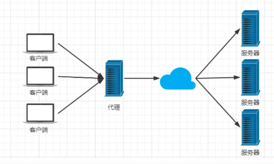

环境介绍
项目部署到线上时，用户使用少，并发量小，仅使用tomcat返回内容给用户，项目只需一个jar包就够了
当访问人数越来越多，并发量慢慢增大，一台服务器已经不能满足需求
于是可以增加服务器，讲项目启动在不同的服务器上，用户访问代理服务器，代理服务器帮助我们转发和处理请求
因此代理服务器需要具有以下特点：
- 负载均衡（给性能强的服务器增加权重，使请求更多的访问到该服务器上）
- 反向代理
我们希望这个代理服务器可以帮助我们接收用户的请求。然后将用户的请求按照规则帮我们转发到不同的服务器节点之上。这个过程用户是无感知的。用户并不知道是哪个服务器返回的结果，我们还希望他可以按照服务器的性能提供不同的权重选择。保证最佳体验!
什么是Nginx
Nginx (engine x)是一个高性能的HTTP和反向代理web服务器，同时也提供了IMAP/POP3/SMTP服务。Nginx是 由伊戈尔·赛索耶夫为俄罗斯访问量第二的Rambler.ru站点开发的,第一个公开版本0.1.0发布于2004年10月4日。2011年6月1日, nginx 1.0.4发布。
其特点是占有内存少，并发能力强，事实上nginx的并发能力在同类型的网页服务器中表现较好，中国大陆使用nginx网站用户有:百度、京东、新浪、网易、腾讯、淘宝等。在全球活跃的网站中有12.18%的使用比率，大约为2220万个网站。
Nginx是-个安装非常的简单、配置文件非常简洁(还能够支持perl语法)、Bug非常少的服务。Nginx启动特别容易，并且几乎可以做到7*24不问断运行，即使运行数个月也不需要重新启动。你还能够不间断服务的情况下进行软件版本的升级。
Nginx代码完全用C语言从头写成。官方数据测试表明能够支持高达50,000个并发连接数的响应。
Nginx作用
Http代理，反向代理
反向代理
正向代理
代理客户端
如：VPN，国内存在防火墙，客户端无法访问国外网站，而客户端使用VPM先可以访问代理服务器，代理服务器访问外国网站，此类代理即为正向代理

反向代理
代理服务器端
如：访问百度网址，百度存在多台服务器，用户仅需通过www.baidu.com访问代理服务器即可，无法感知自身访问的到底是哪台服务器
负载均衡
轮询
加权轮询
保证服务器性能最大化
session共享
iphash对客户端请求的ip进行hash操作。然后根据hash结果将同一个客户端ip的请求分发给同- -台服务器进行处理，可以解决session不共享的问题。
动静分离
动静分离，在我们的软件开发中，有些请求是需要后台处理的，有些请求是不需要经过后台处理的(如: css、 html. jpog. js等等文件)，这些不需要经过后台处理的文件称为静态文件。让动态网站里的动态网页根据一定规则把不变的资源和经常变的资源区分开来， 动静资源做好了拆分以后，我们就可以根据静态资源的特点将其做缓存操作。提高资源响应的速度。